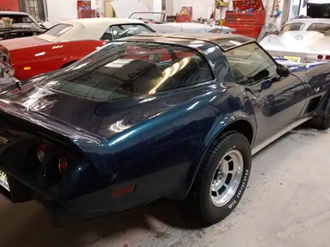

Quality staff. Great repairs very fairly priced
M
Mark Halsband
Posted on Google
Are you ready to see your classic car shine like it did the day it left the factory? Don’t wait any longer to restore your vintage gem to its former glory.
At Tristate Classic Car Restoration and our auto body shop in Tampa, we specialize in bringing lost glory back to the vehicles of the past that are sitting in your garage. Each vintage car is a piece of history, deserving to be fully appreciated. Our expert team of classic car mechanics takes a meticulous approach to transform your classic into a true masterpiece.
We offer personalized automotive restoration in Tampa, catering to pre-owned and used vehicles of all makes and models. Whether it’s an American muscle car or a European classic, we treat every project with the care it deserves.
Our facility is equipped with the latest diagnostic and repair technology, allowing us to offer comprehensive services for all vehicle needs: mechanics, electrical, bodywork, restoration, and paintwork. We ensure maximum safety, guarantee, and quality for every restoration project.

At Tristate Classic Car Restoration, we are committed to restoring cars of all types with unmatched attention to detail. Authenticity is at the heart of every restoration. We begin every project with thorough research to ensure that each detail—whether it’s the paint color or internal components—accurately reflects your vehicle’s original beauty.
Our skilled artisans use only the finest materials and traditional techniques to achieve results that stay true to the vehicle’s heritage.
Our team is made up of passionate car restorers with not only technical expertise but also a genuine love for classic cars. This combination ensures that your vehicle receives the highest level of care throughout the restoration process.
Let us take your classic car through a transformation that brings it back to its glory days. Reach out today and make your restoration project part of our growing collection of timeless masterpieces. Relive the past on four wheels with Tampa’s best auto body shop repair.
Here is a glimpse of the work that we do here at Tristate Classic Car Restorations. From clean ups to full restorations, we do it all
in house! Take a look at some of the cars we have finished or are in progress with.
Quality staff. Great repairs very fairly priced
Only way it could have been better was if the gave me a brand new car, which essentially what my cards right now. Great work Fair pricing Good communication If I was offered thousands of dollars, I couldn't find anything negative to say about this business.
If you’re in search of a reliable and skilled mechanic, the family-owned neighborhood shop that specializes in a wide range of automobiles, including imports and exotics, might just be your new go-to. The expertise and welcoming atmosphere at this garage make it stand out as a community favorite. At this mechanic shop, the range of cars they service is impressive. Whether you drive a trusted domestic model, a sleek European import, or an exotic sports car, the knowledgeable team has the expertise to handle them all. This versatility is a significant advantage, as it offers a one-stop solution for families and car enthusiasts alike who own different types of vehicles. What truly sets this shop apart is its fairness and transparency. The staff is known for their honest assessments and clear communication. Estimates are provided upfront, and they make it a point to discuss any necessary repairs in detail before proceeding. This approach not only builds trust but also ensures that there are no surprises when it comes time to pay the bill. Customer service here is taken very seriously. The friendly team makes each visit pleasant, and they go out of their way to accommodate the schedules of their customers, recognizing that time without a car can be a significant inconvenience. Their commitment to customer satisfaction is evident in the way they handle inquiries and the speed with which they work to get your car back on the road safely and efficiently. This family-owned mechanic shop exemplifies what it means to be community-oriented. Not only do they offer professional auto services across a diverse range of vehicles, but they also do so with the kind of personal touch that only a family-run business can. For anyone who values expertise, integrity, and exceptional service, this mechanic shop is highly recommended.
Thank you Gene and everyone at TriState for an awesome job fixing up my '71 Vette. The repairs turned out great and most impressed with the paint job. Thank you for treating us great being first timers, answering all my questions and working with the insurance company. Highly recommend Tri State.
Excellent experience with Tri-State. Gene and staff went above and beyond the level of service I expected. Will definitely be recommending them and bringing other cars here.
Gene and crew did an excellent job on my 77 corvette. From start to finish they were very professional and courteous. Thank you for a job well done.
Restoring a classic car can be a costly investment. The cost will depend on the vehicle’s condition, the model, and the parts used. Having a reasonable budget is crucial to completing the restoration to the highest standards.
What do you want to achieve with the restoration? Are you planning to take it to car shows, sell it, or keep it for yourself? Your goals will influence the approach to the project. If you plan to sell it, restoration can be a good investment. If you’re keeping it, remember the money you invest might not be recouped, but the value lies in preserving a piece of history.
Tuning focuses primarily on upgrading your car’s engine performance, whereas restoration is a much broader process that restores both the mechanical and aesthetic elements of the vehicle. Restoration requires skill and an appreciation for the car’s history, often regarded as an art form.